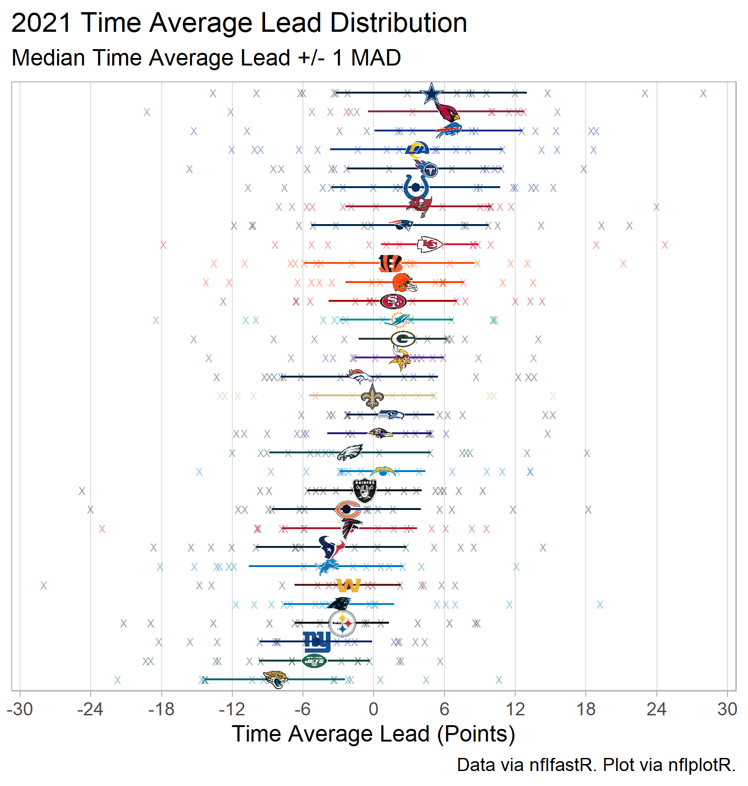
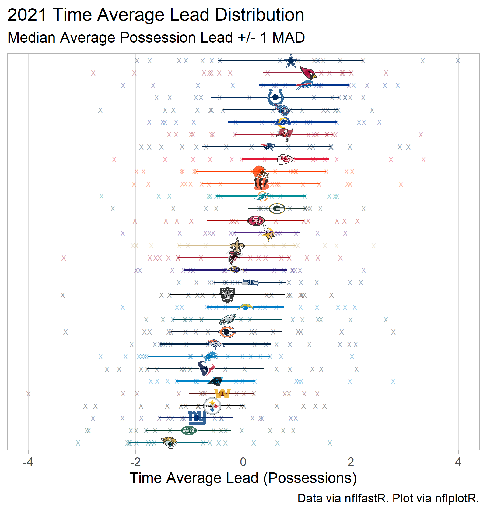

Intro
The following is a collection of team summary statistics for the 2021 season.
For all of these statistics, the basic unit is the time average lead (regulation time only, in either points or possessions) for the 17 regular season games played in 2021.
For an introduction to time averages, check this out.
Graphical Summaries
Point Differential Summaries


(Time Average) Possession Differential

Table
Glossary
Abbreviations used in table:
- METAL: MEdian Time Average Lead.
- The median of a team’s individual game time average leads.
- Units: Points
- METAL+
- Team’s METAL plus one (unscaled) median absolute deviation (MAD)
- Units: Points
- TAL: Time Average Lead
- Unadjusted time average lead for regulation time of all regular season games.
- At any give point in regulation of 2021, team __ led by an average of __ points.
- Units: Points
- Unadjusted time average lead for regulation time of all regular season games.
- SoS: Strength of Schedule
- Opponent quality adjustment based on opponents’ average TAL of opponents time average lead
- Does not consider games against team of interest
- E.g., SOS calculation for HOU does not include the games played against HOU
- Units: Points
- TALE: Time Average Lead Evaluation
- Season time average lead with adjustment for opponent quality
- TALE = TAL + SoS
- MAPLE: Medain Average Possession LEad
- The median of team’s individual game time average leads in possessions.
- For example, lead by 9 points -> +2 possession lead (lead, 2 score game).
- Units: Possessions
- The median of team’s individual game time average leads in possessions.
- MAPLE+
- Team’s MAPLE plus one (unscaled) median absolute deviation
- Units: Possessions
- MOV: .Margin of Victory (convention used by Pro Football Reference)
- Aggregate point differential for team, on per game basis
- MoV = (Season Points Scored - Season Points Allowed)/Games Played